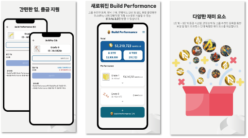
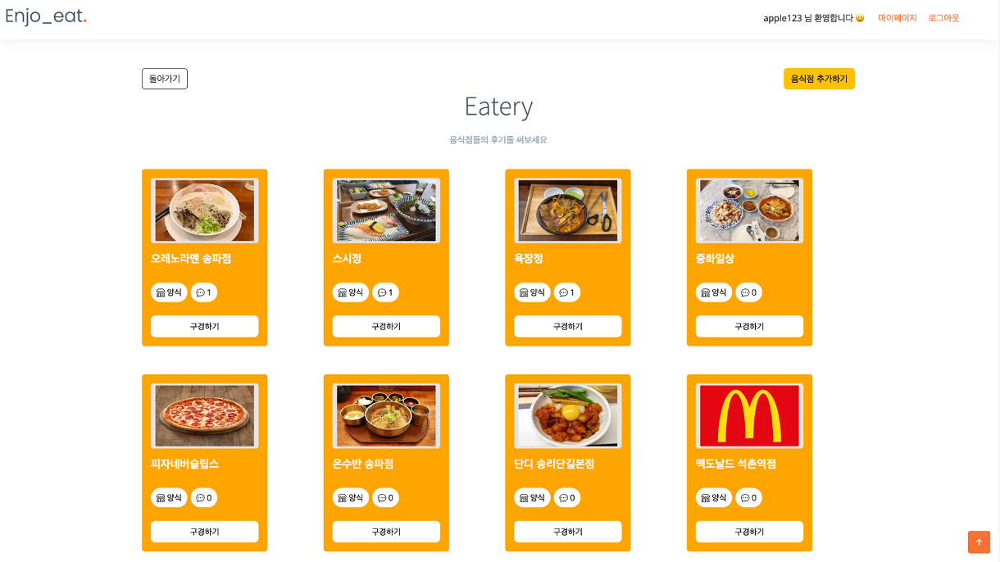

Plus X
2024.09 - 현재
AI 이미지 생성, 사내 그룹웨어, Figma 플러그인, AI 음성 생성, 이벤트 서비스의 백엔드 API와 비동기 처리 흐름을 개발했습니다.
Overview
2024.09 - 현재
AI 이미지 생성, 사내 그룹웨어, Figma 플러그인, AI 음성 생성, 이벤트 서비스의 백엔드 API와 비동기 처리 흐름을 개발했습니다.
2022.08 - 2024.08
리워드 결제, 전력 소모 예측 자동화, 대규모 주기성 작업, 전자지갑/정산 API, 예술 플랫폼 백엔드를 개발하고 운영했습니다.
Backend practical experience
Engineering Insights
System Needs
사용자가 기다리는 시간, 외부 API가 느려지는 시간, 운영자가 상태를 확인해야 하는 시간을 각각 분리해서 제품 흐름 안에 배치합니다.
Core Strategy
Project Proof
Screens & Outputs





Development
AI 생성, 예측 자동화, 정산 작업은 즉시 끝나지 않습니다. 실패와 지연도 제품 흐름의 일부로 다뤄야 합니다.
요청은 빠르게 받고, 처리는 비동기로 넘기며, 상태와 결과는 운영자가 확인할 수 있게 구조화합니다.
Credit / Contact